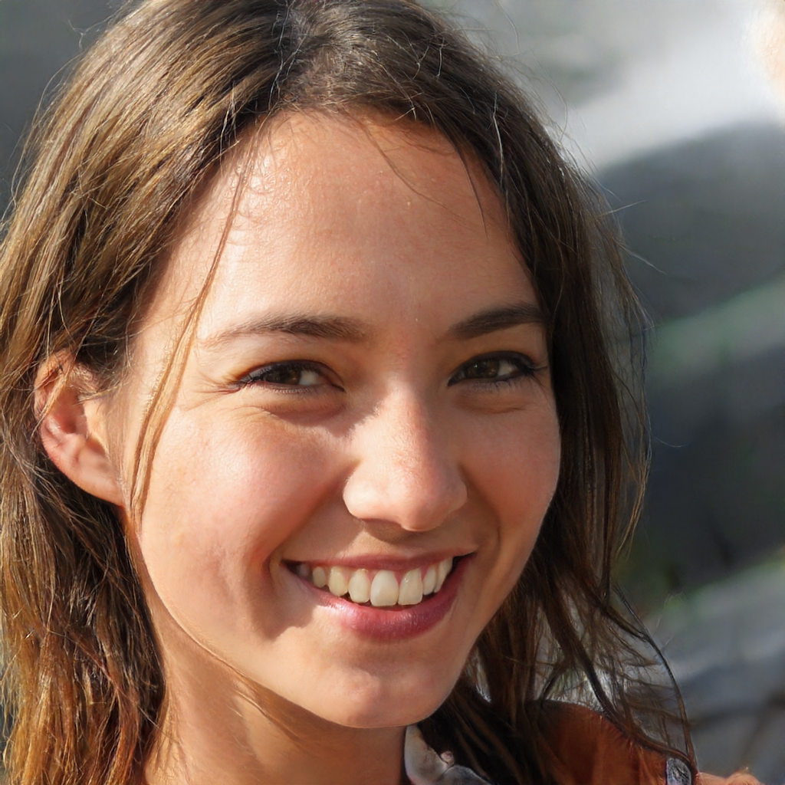

The target audience of this website will be people of all ages that are interested in space. They would probably just visit the site out of curiosity. Others might want to see the daily space photo along with the other information that is changing on the page.
Natalie Dunn
Natalie Dunn is a college student. Sge has a general interest in space, she heard about Astrometo comes to check up on the daily updates of the space picture.
Craig Barnett

Craig Barnett is a father of 3 children. He is an engineer and space is one of his interests. He loves watching sci-fi movies and books. He wants to read more about it so he joins the site.